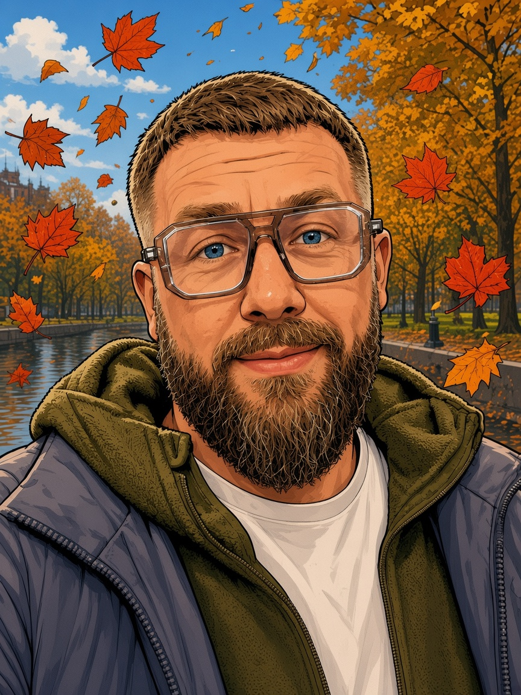
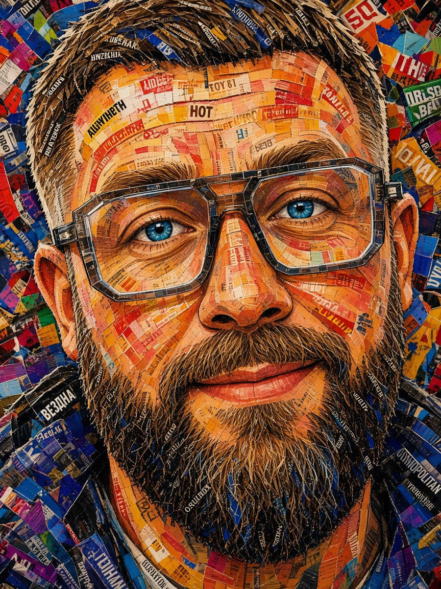
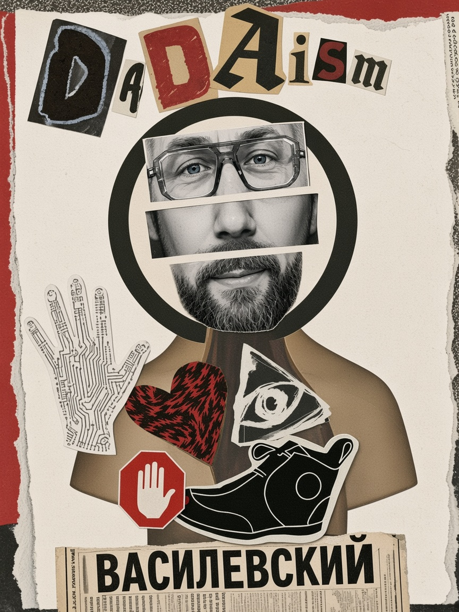

ВАСИЛЕВСКИЙ PORTRAITS
← АКТЕРИЩЕТри стилизации лица по референсам: чистый comic-book, magazine collage и дада-коллаж.


Три стилизации лица по референсам: чистый comic-book, magazine collage и дада-коллаж.


